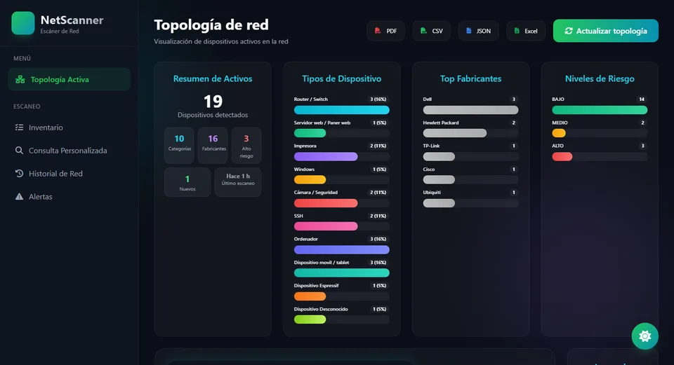
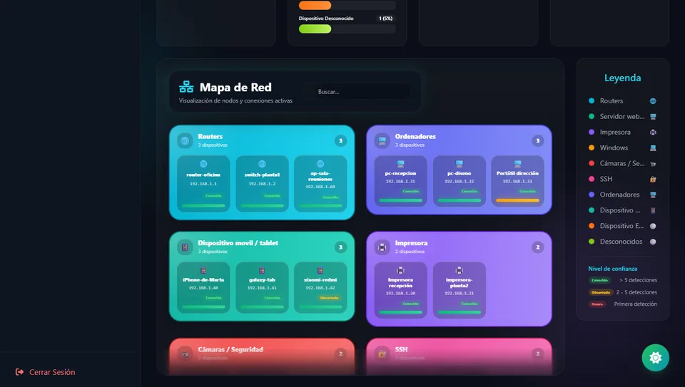
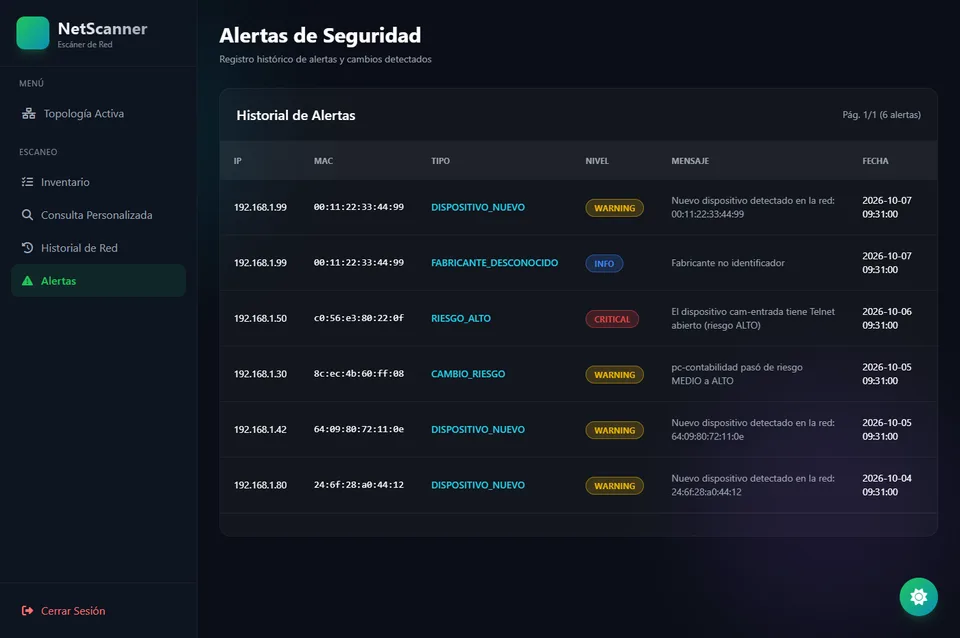
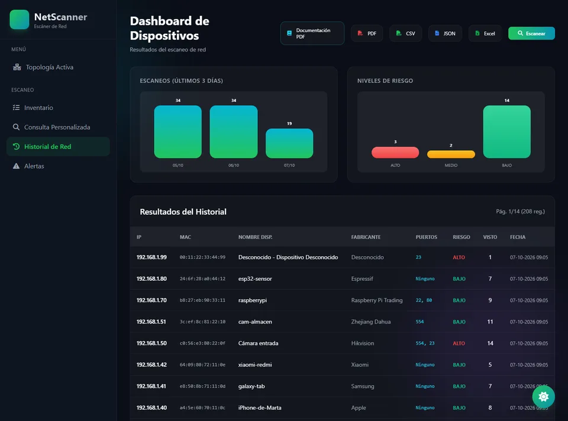

NetScanner
Descubre, inventaría y analiza los dispositivos de tu red local: qué hay conectado, qué riesgo tiene cada uno y qué ha cambiado desde el último escaneo.
Proyecto de equipo de 2º DAM · Apache 2.0. Las capturas usan una red de ejemplo inventada.

Descubrimiento
Mira qué hay en tu red
Un escaneo con Scapy detecta los dispositivos activos y los agrupa por categoría en un mapa fácil de leer.
- Topología activa con solo lo detectado en el último escaneo.
- Clasificación por tipo de dispositivo y fabricante.
- Ficha de cada dispositivo con IP, MAC, puertos abiertos y estado.

Seguridad
Sabe qué es de fiar
Cada dispositivo recibe un nivel de riesgo y de confianza, y el sistema te avisa cuando algo cambia.
- Riesgo alto, medio o bajo según los puertos y servicios expuestos.
- Confianza que crece con las veces que se detecta un dispositivo.
- Alertas de dispositivos nuevos, cambios de IP y fabricantes desconocidos.

Memoria
Recuerda lo que pasó
Todos los escaneos quedan guardados en MongoDB Atlas, con inventario, consultas a medida y exportación.
- Historial con estadísticas, riesgos y fechas de detección.
- Inventario con nombres propios para cada dirección MAC.
- Consulta personalizada y exportación a PDF, CSV, JSON y Excel.

Pruébala
Hecha con Django, MongoDB Atlas y Scapy. Necesita Python 3.13, Npcap en Windows y una cuenta de MongoDB Atlas.
- Clona el repositorio y crea un entorno virtual con
py -3.13 -m venv venv. - Instala las dependencias con
pip install -r requirements.txt. - Ejecuta
python manage.py migrateypython manage.py runserver, y abre 127.0.0.1:8000.
Equipo
Alejandro Donate · Alejandro García · Diego Febles · Diego Rodríguez · Ibrahim Álvarez · Anthony López
Basado en el repositorio original del equipo.